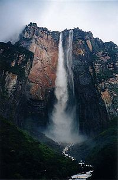

Venezuela

Venezuela, oficialmente denominada República Bolivariana de Venezuela,6 n 1 es un país de América situado en la parte septentrional de América del Sur, constituido por una parte continental y por un gran número de islas pequeñas e islotes en el mar Caribe, cuya capital y mayor aglomeración urbana es la ciudad de Caracas.n 2 Posee una extensión territorial de 916.445 km². El territorio continental limita al norte con el mar Caribe y el océano Atlántico, al oeste con Colombia, al sur con Brasil y por el este con Guyana. Con este último país, el Gobierno venezolano mantiene una reclamación por la Guayana Esequiba sobre un área de 159.542 km².7 Por sus espacios marítimos, ejerce soberanía sobre 71.295 km² de mar territorial,8 22.224 km² en su zona contigua,8 471.507 km² del mar Caribe y del océano Atlántico bajo el concepto de zona económica exclusiva,9 10 11 y 99.889 km² de plataforma continental.11 Esta zona marina limita con las de trece Estados. Su territorio fue residencia de importantes grupos tribales amerindios, como los caribes. Fue avistado por primera vez durante el tercer viaje de Cristóbal Colón en 1498, y se inició poco después la colonización por parte de España con el posterior mestizaje cultural. Venezuela fue el primer país de América del Sur en proclamar su independencia del Imperio español, proceso que se consolidó con la batalla de Carabobo y la posterior batalla naval del Lago de Maracaibo en 1823 con la expulsión definitiva de las tropas españolas.
Tras un largo capítulo de conflictos civiles,13 la República halló su vía hacia la modernización de la mano de gobiernos autoritarios. A mediados del siglo XX comenzó la lucha por un sistema democrático, que se afianzó luego del derrocamiento de la última dictadura militar en 1958. Debido al auge petrolero, Venezuela vivió un período de alto crecimiento económico, que se vio interrumpido por la crisis energética de los años 1980, que suscitó una etapa de inestabilidad política y social alternada con altibajos financieros.